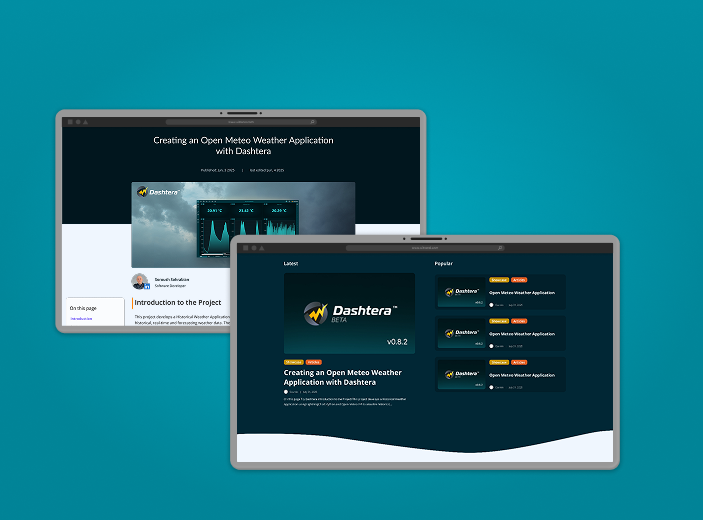

Web Design2025
Dashtera — Blog Design
A complete overhaul of the workspace UI, focused on clarity, hierarchy, and speed. Rebuilt the core components, introduced a new token-based system, and shipped a unified design language across web, mobile, and desktop surfaces.